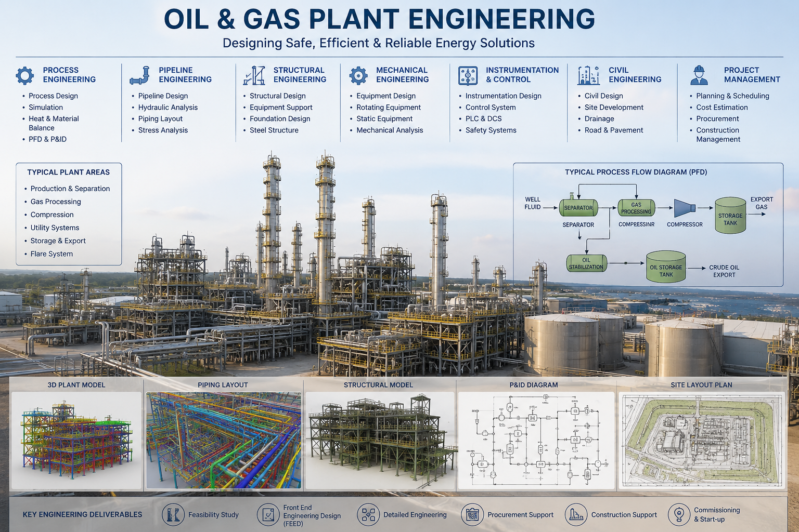

Process Engineering and Project Consultancy for Hydrocarbons, Chemicals, Fertilizers, and Energy Transition Projects
Delivering FEED engineering, detailed engineering solutions, process optimization, energy efficiency, and low-carbon project support for industrial clients globally.
A Technically-Led Process Engineering Consultancy for Industrial Clients
BNKM International is a process engineering and project consultancy company specializing in hydrocarbons, chemicals, fertilizers, and low-carbon energy transition solutions. We support EPC contractors, refineries, petrochemical complexes, fertilizer plants, and energy transition developers with technically sound, standards-compliant engineering across the project lifecycle — from technical feasibility studies through FEED engineering, detailed engineering, and project engineering support.
Our engineering teams combine rigorous process design, dynamic simulation, and heat and material balance development with a disciplined focus on process safety, equipment sizing, and piping and instrumentation, ensuring every deliverable is fit for construction and fit for operation.

End-to-End Process & Project Engineering Capability
From concept to commissioning support, BNKM International delivers process engineering consultancy, FEED engineering, and detailed engineering solutions built on rigorous simulation and standards compliance.
Process Engineering Consultancy
Process design, heat and material balance, and flow scheme development for grassroots and revamp projects.
FEED Engineering
Front-end engineering design packages that de-risk project sanction and downstream detailed engineering.
Detailed Engineering Solutions
Multi-discipline detailed engineering — process, piping, equipment sizing, and instrumentation — ready for construction.
Process Optimization & Dynamic Simulation
Steady-state and dynamic simulation for plant debottlenecking, energy efficiency, and utility integration.
Engineering Depth Across Hydrocarbons, Chemicals, Fertilizers & Low-Carbon Energy
Oil & Gas
Upstream processing, gas conditioning, and midstream facility engineering.
Refining & Petrochemicals
Refinery engineering services and petrochemical engineering services for complex units.
Chemicals & Fertilizers
Fertilizer plant engineering and specialty/bulk chemical process engineering.
Green Ammonia, CCUS & SAF
Green ammonia engineering, CCUS consultancy, and SAF engineering for the energy transition.
Supporting Industrial Decarbonization and Sustainable Energy Transition Projects Globally
BNKM International partners with industrial clients and energy transition developers on green ammonia engineering, CCUS consultancy, SAF engineering, and carbon reduction studies — bringing the same process design rigor used across our hydrocarbons, chemicals, and fertilizer engineering work to low-carbon energy solutions.
Carbon Reduction
Carbon reduction studies and abatement roadmaps for existing assets.
Energy Efficiency
Utility integration and energy efficiency studies across process units.
CCUS Consultancy
Carbon capture, utilization and storage integration studies.
Process Safety
Standards-compliant safety studies across low-carbon facilities.
Standards-Compliant Engineering, Delivered With Technical Rigor
Codes & Standards Compliance
Engineering executed in line with API, ASME, ISO, IEC, and NFPA requirements and client-specific specifications.
Simulation-Led Design
Dynamic simulation and steady-state modelling validate process design before capital is committed.
Multi-Disciplinary Teams
Process, piping, mechanical, electrical, instrumentation, and safety engineers working from one technical basis.
Have a Process Engineering or Project Consultancy Requirement?
Talk to our engineering team about FEED engineering, detailed engineering, or energy transition consultancy for your next project.